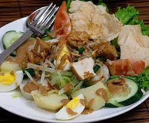

Gado Gado

Adanya gado-gado bermula pada abad ke-17 (1628-1629), saat Kesultanan Mataram yang dipimpin Sultan Agung melakukan Penyerbuan di Batavia, kehabisan pasokan bahan makanan terutama beras.
Selain itu, lumbung-lumbung beras di sekitar Batavia dibakar oleh VOC, sehingga membuat prajurit warok dari Ponorogo yang tergabung dalam pasukan perang membuat sambal bumbu pecel dari kacang tanah, kemudian disiramkan ke berbagai sayuran mentah yang ada di sekitar persawahan untuk bertahan hidup.
Tindakan ini dalam Bahasa Jawa disebut Gadho yang berarti makan hanya lauk saja atau makan lauk tanpa nasi. Resep gado-gado kemudian diikuti oleh prajurit lainnya untuk memakan sayur seadanya yang disiram cairan bumbu pecel.
Seiring perkembangan zaman, kini gado-gado ditambahkan lontong yang diiris kecil, telur, tahu dan kerupuk yang disajikan di warung kecil hingga restoran.(Wikipedia)